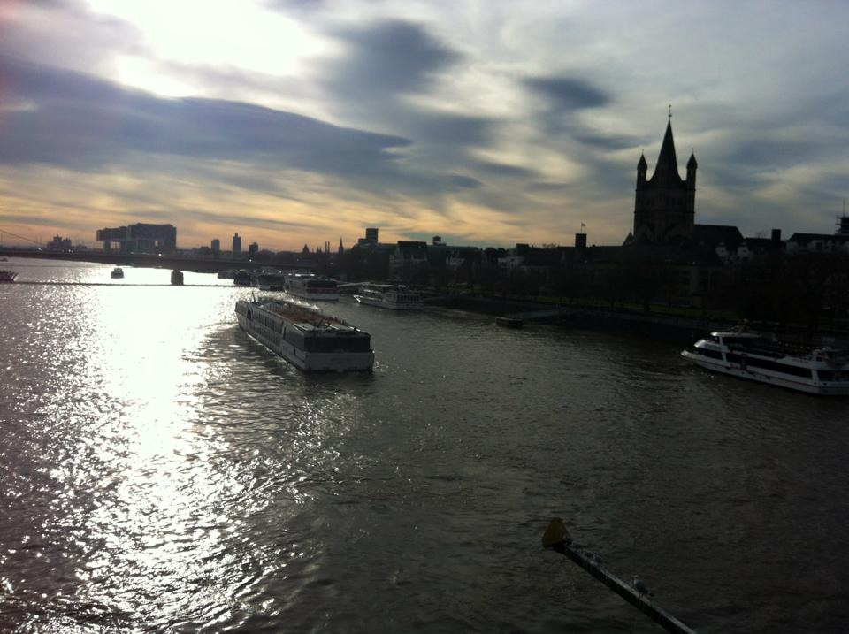
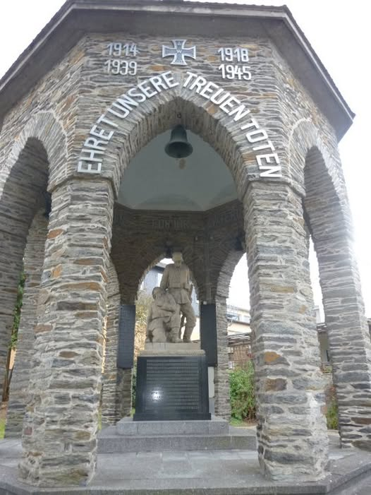
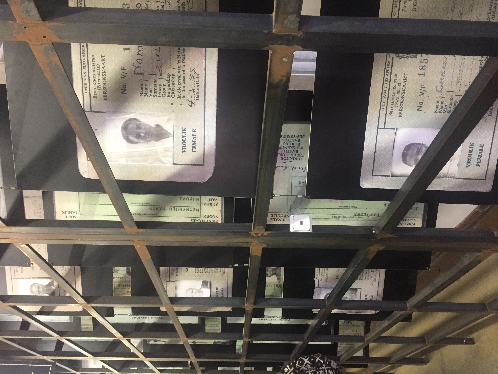
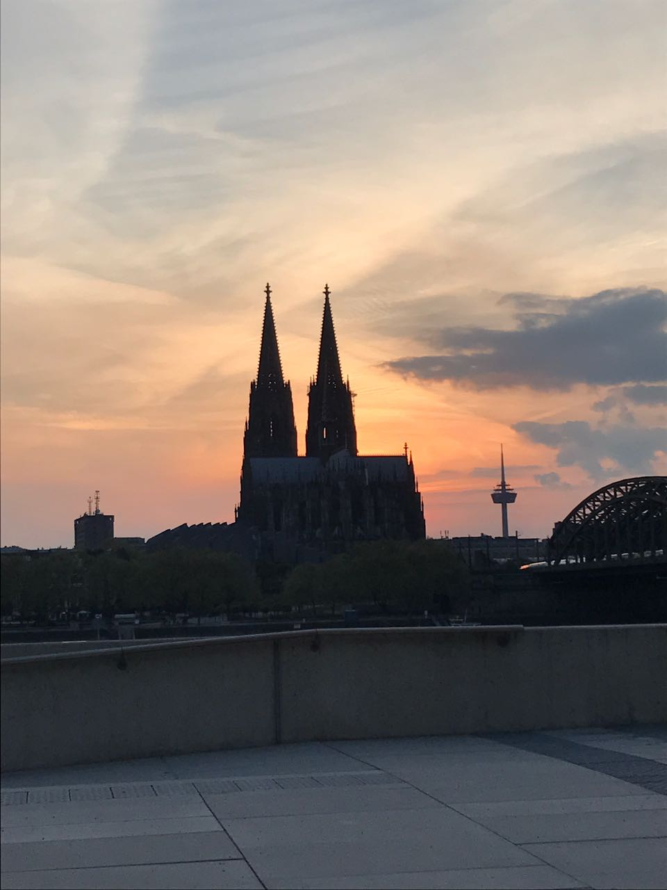
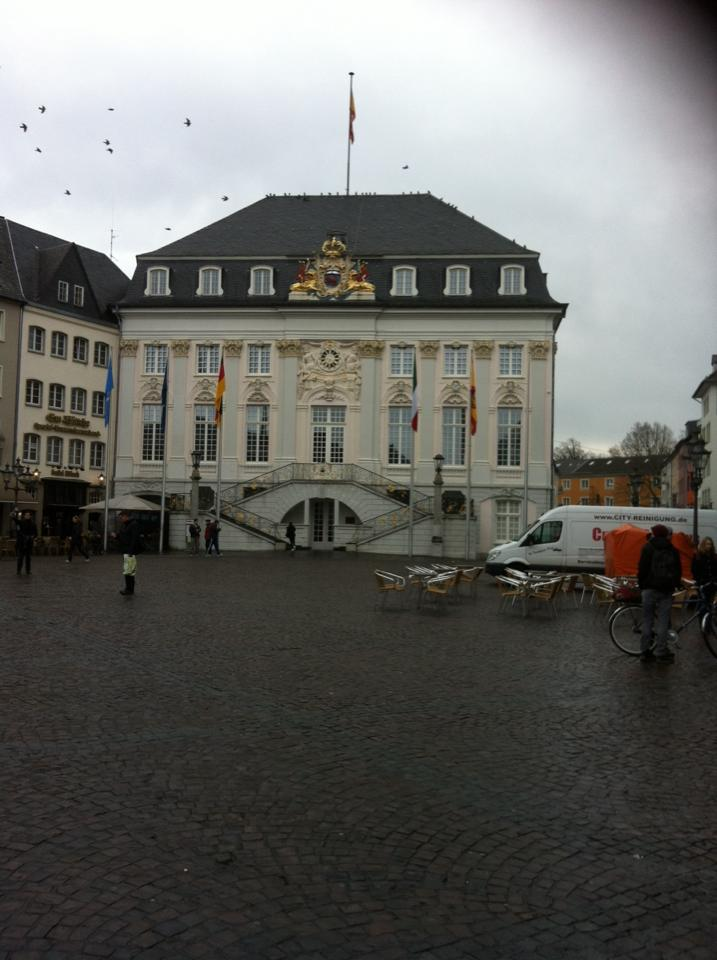
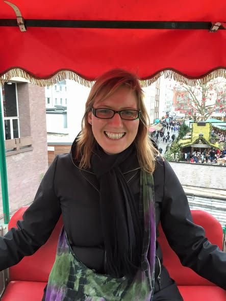

Germany has been part of our travel story since 2005 — when Nicola interrailed through Berlin, Leipzig, Cologne and Munich and fell in love with the country's extraordinary mix of history, culture and craic. A decade later she moved to Cologne for a year, learned German, and discovered what it really means to live like a Kölner. Between us we've explored more of Germany than most Irish people get to see — and we keep finding more reasons to go back.
A glimpse of our Germany adventures — from the Rhine to the biergartens.
Padraig's first encounter with Germany was an interrail trip in 2005 — hopping between Berlin, Leipzig, Cologne and Munich by train and discovering just how vast and varied the country is. Each city felt like a completely different world.
Berlin was extraordinary — the weight of history is impossible to ignore. The remnants of the Wall, Checkpoint Charlie, the Brandenburg Gate, the extraordinary architecture of a city literally divided and then reunited. Berlin hits you differently to almost any other European capital.
Leipzig was a revelation — a city still finding its post-reunification identity in 2005, full of energy, culture and a music scene that felt genuinely alive. Bach was born here, and the city wears its cultural heritage with quiet pride.
Munich was the biergarten capital of the world and everything it promised. Long tables, chestnut trees, cold Bavarian beer and locals who actually want to talk to you — the biergarten culture of Munich is one of those genuinely joyful travel experiences. Marienplatz and the Glockenspiel, the English Garden, the sheer scale of the place — Munich delivered on every level.
In 2015 Nicola moved to Cologne to work in a school for a year — and it changed everything. She learned German properly during her time there, adding it to her growing repertoire of languages alongside French. More importantly, she fell completely in love with the city and its people.
The Kölners have a reputation throughout Germany for being warm, laid-back and welcoming — and every bit of that reputation is earned. Cologne has a distinct identity and a fierce civic pride that you feel as soon as you arrive.
Cologne Cathedral — the Dom — is one of the great Gothic buildings in Europe. It dominates the skyline from every angle and up close it is genuinely awe-inspiring. The detail in the stonework, the sheer scale, the centuries of history embedded in every wall — it is unmissable.
The Chocolate Museum (Schokoladenmuseum) is brilliant fun — the story of chocolate from bean to bar, a chocolate fountain you can dip a wafer into, and more tastings than you can handle. Perfect for a rainy afternoon.
The 4711 shop on Glockengasse is a Cologne institution — the home of Eau de Cologne, the original fragrance that gave a whole category of perfume its name. The shop is beautiful, the history is fascinating and the free spritz at the door is a lovely touch.
And the Irish bars — Cologne has a warm, welcoming Irish pub scene that became something of a home away from home for Nicola during her year there. The friendliness of the Kölners and the familiarity of a good Irish pub is a combination that works surprisingly well.




Living in Cologne gave Nicola the perfect base to explore the wider region — and she made the most of it.
Like something straight out of a fairytale — the ruined castle perched above the old town, the river Neckar, the cobbled streets and the ancient university atmosphere. One of the most beautiful cities in Germany and absolutely worth a visit.
The first Nazi concentration camp is now a memorial site and one of the most moving places we've ever visited. Deeply sobering and deeply important. An easy day trip from Munich — and something everyone should do at least once.
Beethoven's birthplace and a charming, manageable city on the Rhine. The old government quarter, the beautiful market square and the lovely riverside make it a perfect half-day trip from Cologne.
Cologne's great rival — famous for its Altbier (the dark alternative to Cologne's Kölsch) and its Altstadt, the so-called longest bar in the world. A brilliant city with a distinct personality and well worth a day trip from Cologne.
The seat of Charlemagne and one of the great medieval cities of Europe — the Cathedral is a UNESCO World Heritage Site and one of the oldest in northern Europe. Right on the borders of Belgium and the Netherlands, it feels like three countries in one place.


Germany rewards proper exploration — and with so many incredible cities and regions to cover, a guided tour is a brilliant way to see more in less time. TourRadar has fantastic Germany tours covering Berlin, Bavaria, the Rhine Valley and beyond.
Disclosure: Affiliate link — if you book through it we may earn a small commission at no extra cost to you.
Great deals on hotels across Germany — Berlin city centre, Munich near the Marienplatz, Cologne by the Cathedral and beyond.
Disclosure: If you book through these links we may earn a small commission at no extra cost to you.
Berlin walking tours, Munich biergarden experiences, Cologne Cathedral tours, Heidelberg castle visits, Dachau memorial tours and much more.
Disclosure: If you book through these links we may earn a small commission at no extra cost to you.
Common questions
What to pack for Germany
Germany is a year-round destination but layers are essential — summers can be warm, winters are cold and the weather between cities varies significantly. Comfortable walking shoes are non-negotiable.
Germany's cities reward walking — cobbled streets, long promenades, castle hills. Good shoes are essential.
View on Amazon →German weather is changeable — a good layer keeps you comfortable whether you're in a biergarten on a warm evening or exploring Heidelberg castle in the breeze.
View on Amazon →Stay connected across Germany without roaming charges — essential for navigating between cities and finding the best biergarten.
View on Amazon →Long days exploring German cities drain your battery fast — keep it charged for maps, photos and train times.
View on Amazon →Germany uses Type F plugs — different to Ireland. Don't get caught on day one with a dead phone.
View on Amazon →Perfect for city days, castle visits and long train journeys — keeps everything organised and hands free.
View on Amazon →Disclosure: These are Amazon affiliate links. If you buy through them we may earn a small commission at no extra cost to you.
Germany is one of Europe's most rewarding travel destinations — endlessly varied, brilliantly connected by rail, and full of cities that each have their own distinct character. Start with Cologne, add a Heidelberg day trip, and get yourself to a Munich biergarten. You won't regret it.
Affiliate disclosure: if you book through our links we may earn a small commission at no cost to you. We only recommend trips and experiences we'd be happy to stand over.